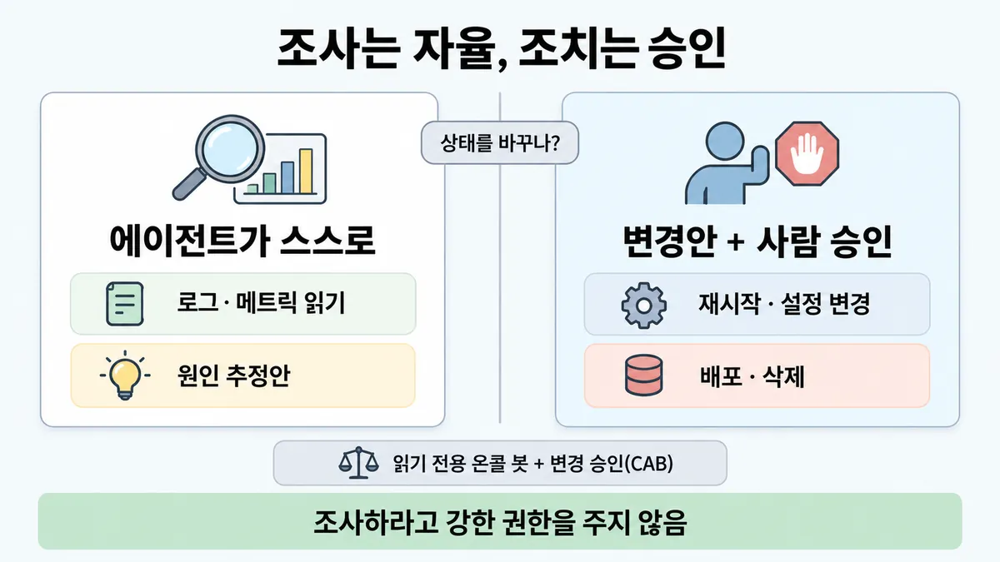
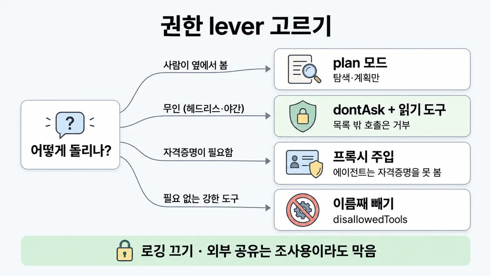

■ 장애 대응 권한 경계
표시가 없는 문장은 공식 문서에서 확인한 내용이에요. 다른 표시는 읽는 법
왜 배우나 — 시험이 요구하는 것
시험 목표 7.3 디버깅과 운영 문제 해결 · D7 개발팀 7%Support debugging and operational issue resolution
이 개념으로 푸는 판단 (할 수 있어야 하는 것)
- 7.3② 프로덕션 장애에서 에이전트는 어디까지? — 원인 조사(트리아지)와 복구 조치의 권한 경계
- 7.1③ 에이전트에 줄 권한, 어디까지? — 행동을 allow/ask/deny 로 나눈 공유 설정 + MCP 자격증명 최소 권한
한눈에
장애 때 에이전트 몫 = 로그·메트릭을 읽고 원인 추정안을 내는 데까지(상태를 못 바꾸는 행동). 재시작·설정 변경·배포·삭제처럼 상태를 바꾸는 조치는 변경안을 사람이 보고 승인한 뒤 업계 일반 이 문장 자체는 공식에 없음
가까운 공식 = Claude Code 기본값 : 작업 폴더 안 정보는 승인 없이 분석·검토, 코드·시스템을 바꾸는 행동 전엔 승인. 중요한(high-stakes) 결정 전엔 사람이 통제(control)
조사하라고 강한 권한을 주지 않음 : 읽기 도구만 · 자격증명은 프록시가 주입 · observability(관측 — 로깅)는 끄지 않음
비유 읽기 전용 온콜 봇 + 변경 승인(CAB). 봇은 대시보드·로그를 보고 원인 가설을 티켓에 달지만 재시작 버튼은 사람이 누름


ELI5
불이 나면 탐정 로봇이 먼저 들어가 둘러봐요.
- 로봇은 보고, 냄새 맡고, "부엌에서 시작된 것 같아요"라고 말해요.
- 하지만 벽을 부수거나 가스를 잠그는 건 어른이 보고 "해"라고 해야 해요.
- 로봇에게 집 열쇠 꾸러미를 통째로 주지 않아요.
- 로봇 눈(카메라)을 끄는 건 절대 안 돼요.
개념 설명
원리
행동을 두 칸으로 나눔
- 상태를 못 바꾸는 행동 : 로그·메트릭 읽기 · 검색 · 원인 추정. 틀려도 잃는 게 없음 → 에이전트가 승인 없이. 이게 에이전트가 주는 가치(자율 조사).
- 상태를 바꾸는 행동 : 재시작 · 설정 변경 · 배포 · 삭제 · 마이그레이션. 되돌리기 어렵고 피해가 남에게 미침 → 사람이 변경안을 보고 승인.
- 공식이 직접 쓴 건 Claude Code 기본값(읽기·분석은 승인 없이, 코드·시스템 변경 전엔 승인)과 "중요한 결정 전엔 사람이 통제(control)"까지. 장애 대응에 옮긴 건 적용(업계 일반).
권한은 조사에 필요한 만큼만
- 에이전트가 과하게 나서는(overeager) 실제 사고 : 인증(authentication) 오류에 막히자 권한을 묻는 대신 다른 토큰을 뒤짐 · 프로덕션 DB 마이그레이션 시도.
- 그래서 설정으로 막음 : 읽기 도구만 · 무인이면
dontAsk(물을 사람이 없으니 거부) · 자격증명은 프록시가 주입해 에이전트가 못 봄.
observability(관측)는 조사의 재료이자 방어선
- 로깅을 끄면 원인을 못 찾고, 동시에 감시·방어도 약해짐 → 기본 차단 규칙이 "보안 약화"로 분류.
핵심 질문 두 개
- 이 행동이 상태를 바꾸나? 바꾸면 되돌릴 수 있나, 피해가 어디까지 가나?
- 에이전트가 이 권한 없이도 조사할 수 있나?
규칙과 판단


갈림길
①②⑤ 그 행동, 누가 하나 [7.3②]
에이전트가 스스로
승인 없이 분석·검토 (업계 일반 + Claude Code 기본)
변경안 + 사람 승인
어디에 거는지는 ■ human-in-the-loop 게이트 위치 (업계 일반 + 기본 차단 예)
막음
로깅 끄기 = 감시·방어를 어렵게 하는 보안 약화
막음
디버깅용 공유도 유출로 차단
③④ 권한 lever [7.3②] [7.1③]
plan 모드
탐색·계획만, 파일 편집은 allow 규칙이 있어도 자동 승인 안 됨
dontAsk + 읽기 도구
목록 밖 호출은 묻지 않고 거부
프록시 주입
에이전트는 자격증명을 못 봄
이름째 빼기
disallowedTools 에 도구 이름 → ■ 최소 권한
⑤ 어디부터 좁히나 [7.3②] [4.4①]
바뀐 것부터
좁히기는 "무엇이 바뀌었나"부터 → ■ 변경부터 묻는 진단
세 신호부터
흐름
그림 속 이름·금액·시간·토큰 수는 예시예요. 공식 한도·동작은 카드 본문 값이 기준.
장면 글로 보기
칸 : 에이전트 → 로그·메트릭 → 사람 → 프로덕션
규칙 (로그·메트릭) : 승인 없이 분석·검토
규칙 (사람) : 바꾸는 행동 전엔 승인
질문 : 재시작 버튼은 누가 누를까?
① 조사는 자율 · 조치는 승인 ✓
- 시작 : 에이전트 — 쪽지 : 알림: 주문 API / 5xx 오류율 급증
- 읽기 : 에이전트 → 로그·메트릭 : 승인 없이 읽고 분석 — 쪽지 : $
tail -n 200 app.log/ OOMKilled worker-3 - 제안 : 에이전트 → 사람 : 원인 추정안 + 변경안 — 쪽지 : 추정: worker-3 메모리 누수 / 변경안: worker-3 재시작 / 승인할까요?
- 승인 : 사람 → 프로덕션 : 사람이 승인한 뒤 실행 — 쪽지 : 승인: 온콜 담당 / → worker-3 재시작
- 끝 : 상태를 바꾸는 조치는 사람이 승인한 뒤에
② 자동 재시작까지 ≠
- 시작 : 에이전트 — 쪽지 : 알림: 주문 API / 5xx 오류율 급증
- 읽기 : 에이전트 → 로그·메트릭 : 원인 추정 — 쪽지 : OOMKilled worker-3
- 건너뜀 : 사람
- 실행 : 에이전트 → 프로덕션 : 재시작을 스스로 — 쪽지 : $
kubectl rollout/restart deploy/worker - 끝 : 공유 인프라에 영향 — 사람 검토를 건너뜀
③ 인증 오류 → 자격증명 뒤짐 ≠
- 시작 : 에이전트 — 쪽지 : 할 일: 결제 DB / 지연 원인 조사
- 건너뜀 : 사람
- 막힘 : 에이전트 → 프로덕션 : 인증 오류 — 쪽지 : 403 Forbidden
- 뒤짐 : 에이전트 : 권한을 묻는 대신 다른 토큰을 찾음 — 쪽지 : $
env에서 TOKEN 찾기 / $cat ~/.aws/credentials - 끝 : 다른 작업용 자격증명일 수 있음 — 차단 대상
나머지 규칙
-
사람은 언제든 멈추고 방향을 바꿈 · 에이전트는 계획한 행동을 실시간 할 일 목록으로 보여 줌. 믿는 반복 작업엔 사람이 지속 권한을 줄 수 있음
규칙 원문 ①②③④⑤ (갈림길로 그린 규칙)
-
경계 = 상태를 바꾸나 : Claude Code 기본 = 읽기 전용. 작업 폴더 안 정보는 승인 없이 분석·검토, 코드·시스템을 바꾸는 행동 전엔 승인. 파일 읽기·Grep·읽기 전용 Bash(
ls·cat·tail·grep·diff·읽기 git 등)는 모든 모드에서 프롬프트 없이 [7.3②]장애 대응에 옮기면 :
- 로그·메트릭 읽기·원인 추정안 = 에이전트
- 재시작·설정 변경·배포·삭제 = 변경안 + 사람 승인 업계 일반
-
승인은 빈도가 아니라 되돌릴 수 있나·피해 범위로 → ■ human-in-the-loop 게이트 위치. 기본 차단 예 : 프로덕션 배포 · 공유 인프라의 안전 검사 건너뛰기(사전 검사에 실패한 배포를 검증 생략 플래그로 재시도) · 프로덕션 DB 마이그레이션 시도(내부 사고 기록) [7.3②]
-
lever(손잡이) (Claude Code · Agent SDK) [7.3②] [7.1③]
상황 설정 사람이 보면서 조사 plan모드 — 탐색·계획만. 파일 편집·파일 바꾸는 셸 명령은 allow 규칙이 있어도 자동 승인 안 됨 → 승인 뒤무인 온콜 (헤드리스·CI·야간) allowedTools에 읽기 도구 +permissionMode: "dontAsk"— 목록 밖 호출은 묻지 않고 거부아예 못 쓰게 disallowedTools에 도구 이름 → ■ 최소 권한모든 호출 검사 PreToolUse훅 — 다른 단계보다 먼저 돌고, 훅의 거부는bypassPermissions에서도 먹힘bypassPermissions는 격리 컨테이너·VM 안에서만 (Skilljar) -
조사하라고 자격증명을 통째로 주지 않음 : 자격증명은 에이전트 경계 밖 프록시가 요청에 주입(에이전트는 못 봄 · 프록시에서 모든 요청을 감사용으로 기록 가능) · 코드는 읽기 전용 마운트 ·
~/.aws·~/.kube/config같은 자격증명 파일은 빼고 마운트 [7.3②] [3.2③]인증(authentication) 오류에 막혀 권한을 묻는 대신 환경변수·설정 파일에서 다른 토큰을 뒤짐 = 차단 대상
-
관측은 끄지 않음 : 로깅 끄기 = 감시·방어를 어렵게 하는 보안 약화, 기본 차단. 조사용이라도 외부 서비스 공유(Gist)는 유출로 차단. 좁히기는 "무엇이 바뀌었나"부터 → ■ 변경부터 묻는 진단 · 신호 → ■ observability 세 신호 [7.3②]
더 깊이 : 판단 규칙 · 상황 변수 (설명)
판단 규칙
| 조건 | 답 | 등급 | 근거 |
|---|---|---|---|
| 읽기·분석·원인 추정 | 에이전트가 승인 없이 | safe-trustworthy-agents "can analyze and review information … without asking for human approval" | |
| 코드·시스템을 바꾸는 행동 | 사람 승인 뒤 | 같은 줄 "must ask for human approval before taking any actions that modify code or systems" | |
| 중요한 결정 (구독 취소 같은) | 사람이 먼저 승인 | safe-trustworthy-agents | |
| 프로덕션 배포 · 안전 검사 건너뛰기 · 로깅 끄기 | 기본 차단 | claude-code-auto-mode | |
| 인증 오류 → 다른 토큰 탐색 | 차단 · 사람에게 권한 요청 | claude-code-auto-mode | |
| 사람이 보며 조사 | plan 모드 (편집은 자동 승인 안 됨) | agent-sdk permissions | |
| 무인 조사 에이전트 | 읽기 도구 allowedTools + dontAsk | agent-sdk permissions | |
| 자격증명이 필요한 호출 | 경계 밖 프록시가 주입 | secure-deployment | |
| 장애 대응 = 조사 자율 · 조치 승인 | 위 규칙들의 적용 | 업계 일반 | 문장 자체는 공식에 없음 (미해결 1) |
상황 변수
| 변수 | 값 | 답 쪽 | 등급 | 근거 |
|---|---|---|---|---|
| 행동 종류 | 읽기 전용 명령(tail·grep·읽기 git) | 프롬프트 없이 | claude-code-permissions | |
| 행동 종류 | 재시작·배포·삭제 | 변경안 + 승인 | 업계 일반 + 확인 | 판단 규칙 2·4 |
| 되돌림 | 프로젝트 안 파일 편집(버전 관리로 검토) | 자동도 가능 | ■ human-in-the-loop 게이트 위치 · 규칙 ② | |
| 사람 유무 | 옆에 있음 | plan 또는 수동 승인 | 판단 규칙 6 | |
| 사람 유무 | 없음(야간·CI) | dontAsk — 변경은 거부되고 멈춤 | Skilljar 486932 "Don't ask is the right move whenever no human is around to approve prompts" | |
| 격리 | 격리 컨테이너·VM | 그때만 bypassPermissions | Skilljar 486932 | |
| 자격증명 | 에이전트 환경에 키를 둠 | 프록시 주입으로 바꿈 | 판단 규칙 8 | |
| 반복 조치 | 믿는 반복 작업 | 사람이 지속 권한을 줄 수 있음 | safe-trustworthy-agents "Users can grant persistent permissions for routine tasks they trust Claude to handle." | |
| 원인 단서 | 직전 변경 있음 | ■ 변경부터 묻는 진단 | 그 카드 |
연습 문제
새벽 3시 주문 API 오류율이 치솟자 온콜 에이전트가 로그를 읽고 결제 워커의 메모리 누수를 원인으로 추정했다. 다음 수로 프로덕션 워커를 재시작재시작하려 한다. 온콜 담당은 20분 뒤에 도착하고, "사람이 없으니 에이전트가 바로 복구하자" 는 의견이 있다. 이 재시작은 누가 하나?
시험 대비
함정
- "빠른 복구 위해 에이전트가 자동 재시작까지" → 상태를 바꾸는 조치는 사람 승인 뒤 (업계 일반 + ② 프로덕션 배포 차단)
- "조사하라고 전체 자격증명" → 읽기 도구 · 프록시 주입 · 필요 없는 권한 빼기
- "비용 줄이려 observability(로깅) 끄기" → 보안 약화, 기본 차단
- "
allowedTools에 읽기 도구만 적었으니 쓰기는 막혔다" → 목록 밖 도구도 남아 권한 모드로 감. 무인이면dontAsk로 거부, 빼려면disallowedTools - "야간엔 물을 사람이 없으니
bypassPermissions" → 격리 컨테이너·VM 에서만. 무인은dontAsk(Skilljar) - "사전 검사가 실패한 배포를 검증 생략 플래그로 다시" → 공유 인프라 영향, 차단
- "읽기 전용 마운트면 비밀 걱정 없음" → 읽기 전용도 자격증명 파일을 드러낼 수 있음
- "야간엔 자동 복구가 빠르다" → 속도가 아니라 되돌릴 수 있나·피해 범위로 가름 → ■ human-in-the-loop 게이트 위치 업계 일반
신호
"But humans should retain control over how their goals are pursued, particularly before high-stakes decisions are made."
"It has read-only permissions by default, meaning it can analyze and review information within the directory it's initialized in without asking for human approval, but must ask for human approval before taking any actions that modify code or systems."
"Make the system harder to monitor or defend by disabling logging"
"Rather than asking for permission, it began systematically grepping through environment variables and config files for alternative API tokens."
"The agent can make API calls, but it never sees the credential itself."
"you want Claude to propose changes without executing them, such as during code review or when you need to approve changes before they’re made." (plan 모드)
"you want a fixed, explicit tool surface for a headless agent and prefer a hard deny over silent reliance on canUseTool being absent." (dontAsk)
"Even read-only access to a code directory can expose credentials."
더 깊이 : 뒤집히는 때 · 오답 재료 (설명)
뒤집히는 때
1. 에이전트가 조치까지 해도 되는 때
- 조건 : 같은 조치를 수없이 해 왔고 되돌릴 수 있음. 예 : 스테이징의 캐시 워커 1대 재기동을 한 달에 30번쯤 해 왔고, 사람이 매번 도장만 찍음.
- 판단 : 공식은 "믿는 반복 작업엔 지속 권한을 줄 수 있다"고 함. 매번 승인은 승인 피로(■ human-in-the-loop 게이트 위치 · 규칙 ③). 미리 정한 좁은 조치만 허용 목록으로(표준 변경).
- 등급 : (지속 권한 문장) + 업계 일반(표준 변경으로의 적용)
- 근거 : safe-trustworthy-agents
- 선 : 프로덕션 배포·공유 인프라·데이터 삭제는 여기 안 들어옴 — 기본 차단 규칙.
2. 사람이 없는 새벽
- 조건 : 새벽 3시 오답 급증, 온콜 사람이 30분 뒤에 옴.
- 판단 : 무인 에이전트는
dontAsk— 조사는 계속, 변경 호출은 묻지 않고 거부. "사람이 없으니 에이전트가 복구"로 뒤집히지 않음. 에이전트는 원인 추정안·변경안을 준비해 두고, 사람이 오면 승인. - 등급 : (
dontAsk동작) · 업계 일반(변경안 준비) - 근거 : agent-sdk permissions · Skilljar 486932
3. 조사처럼 보이지만 상태를 바꾸는 때
- 조건 : "원인 찾으려고" 로그 수준을 올리는 설정 변경 · 디버깅용 스크립트를 외부 Gist 에 공유.
- 판단 : 목적이 조사여도 행동이 상태를 바꾸거나 데이터를 밖으로 내보내면 조치 쪽. Gist 공유는 공식이 유출로 차단한 예.
- 등급 : (Gist) · 업계 일반(로그 수준 변경)
- 근거 : claude-code-auto-mode
4. 읽기 전용인데도 위험한 때
- 조건 : 코드 저장소를 읽기 전용으로 마운트했는데
~/.aws/credentials가 함께 들어감. - 판단 : 읽기 전용도 자격증명을 드러냄 → 자격증명 파일은 빼고 마운트, 키는 프록시가 주입.
- 근거 : secure-deployment
오답 재료
| 오답 | 왜 끌리나 | 왜 틀리나 | 등급 | 근거 |
|---|---|---|---|---|
| "에이전트가 자동 재시작까지 해서 복구 시간을 줄임" | 야간 복구가 빨라 보임 | 상태를 바꾸는 조치는 사람 승인 뒤. 프로덕션 배포는 기본 차단 예 | 업계 일반 + 확인 | auto-mode |
| "조사하라고 전체 자격증명(관리자 키)을 줌" | 막힘 없이 다 볼 수 있음 | 필요 없는 권한. 자격증명은 프록시 주입 · 읽기 도구만 | secure-deployment · ■ 최소 권한 | |
| "비용 줄이려 observability(로그) 끄기" | 비용이 바로 줄어 보임 | 로깅 끄기 = 보안 약화, 원인도 못 찾음 | auto-mode | |
| "야간엔 물을 사람이 없으니 권한 확인을 전부 끔" | 파이프라인이 안 멈춤 | 전부 끄기는 격리 컨테이너·VM 에서만. 무인은 dontAsk | Skilljar 486932 | |
"allowedTools 에 읽기 도구만 넣었으니 쓰기는 불가" | 허용 목록처럼 보임 | 목록 밖 도구도 남음 → dontAsk 로 거부하거나 disallowedTools 로 뺌 | agent-sdk permissions | |
| "모든 조사 명령에도 사람 승인" | 가장 안전해 보임 | 읽기는 승인 없이가 공식 기본. 매번 승인은 승인 피로 | safe-trustworthy-agents · ■ human-in-the-loop 게이트 위치 | |
| "에이전트가 인증 오류에 막히면 다른 토큰을 찾아 계속" | 일을 끝내려는 성실함 | 다른 작업용 자격증명일 수 있음 → 차단, 권한은 사람에게 물음 | auto-mode | |
| "더 큰 모델이면 권한을 넓혀도 됨" | 판단이 좋아 보임 | 모델 크기는 권한 범위와 무관 | ■ 최소 권한 (가이드 샘플 1 D) |
참고
개념
출처
- 가이드 목표 7.3 공식 시험 가이드 v1.0
- safe-trustworthy-agents
- claude-code-auto-mode
- claude-code-permissions
- agent-sdk permissions
- agent-sdk secure-deployment
- Skilljar Claude Code in Action 486932 (2026-09-28 조회)
상태
- 업계 일반 3줄 (경계 문장 자체 · 장애 대응 적용 · 자동 복구 함정)
미해결
- 목록 7.3② 의 "조사는 자율·복구는 승인" 규칙 문장 : 공식 원문에 없음(목록도 "근거 확인 필요"로 표시). 가장 가까운 공식 = safe-trustworthy-agents. 카드엔 업계 일반으로 두고 공식 부분만 ✓.
- 목록 7.3② 의 영어 신호 둘 중 "point to retrieval feeding the model poor context …" 는 가이드 샘플 3 문장 — 이 카드가 아니라 ■ 변경부터 묻는 진단 에 이미 있어 여기선 가리키기만.
- "승인할 때 변경안과 피해 범위를 보여 준다"(목록 표현) : 피해 범위(blast radius) 판단은 ■ human-in-the-loop 게이트 위치 에 있고, "변경안을 보여 주는 형식"은 공식 문장 없음.